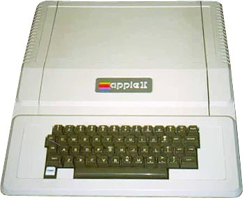

Chương 6

gay khi bước chân đến Hội chợ Máy tính cá nhân (Personal Computer Festival), Jobs lập tức nhận ra Paul Terrell của Byte Shop đã đúng: Máy tính cá nhân nên nằm gọn trong một gói hoàn chỉnh. Jobs quyết định thế hệ máy tính Apple tiếp theo cần phải có một bộ vỏ lớn và bàn phím gắn trên thân máy, được tích hợp toàn bộ, từ nguồn điện cho đến phần mềm. “Mục tiêu của tôi là tạo ra một chiếc máy tính trọn gói hoàn chỉnh đầu tiên”, ông nhớ lại. “Chúng tôi không còn hướng đến những người dùng có sở thích tự lắp ráp máy tính cho riêng mình, những người biết cách mua bộ biến áp và bàn phím. Thực tế, những người như vậy chỉ là thiểu số, chiếm 1/1000 người.”

Vào ngày quốc tế Lao động năm 1976, trong phòng của mình, Wozniak vật lộn với nguyên mẫu máy tính mới, có tên gọi Apple II - dòng sản phẩm mà Jobs hy vọng sẽ đưa tên tuổi công ty lên một vị thế cao hơn. Họ chỉ mang mẫu đó ra ngoài duy nhất một lần, lúc đêm khuya, để thử nghiệm trên một máy chiếu trong phòng hội nghị. Wozniak đã khéo léo để bộ vi xử lý của máy thực hiện việc tạo màu sắc, vì thế ông muốn kiểm tra xem nó hoạt động như thế nào trên màn hình tivi sử dụng máy chiếu để trình chiếu trên màn ảnh rộng. “Tôi thấy một máy chiếu thông thường dường như có phương thức hiển thị màu sắc khác, và có thể không tương thích với phương thức của tôi”, ông nói “Vì vậy, tôi kết nối Apple II với chiếc máy chiếu này và nó đã hoạt động rất tốt”.
Khi Wozniak gõ lên bàn phím, những đường nét hoa văn đầy màu sắc trên màn hình tràn ngập phòng. Người đầu tiên nhìn thấy chiếc Apple II là một nhân viên kỹ thuật của khách sạn. Anh ta nói đã biết rất nhiều loại máy tính khác nhưng đây chính là thứ mà anh ta muốn mua.
Để sản xuất Apple II hoàn chỉnh cần phải có một lượng vốn đáng kể, vì thế họ đã nghĩ đến việc bán bản quyền cho một công ty lớn hơn. Jobs đến AI Alcorn và đề nghị một cơ hội thương lượng với ban quản lý Atari. Jobs thu xếp một cuộc hẹn với chủ tịch công ty, Joe Keenan, một người bảo thủ hơn nhiều so với Alcorn và Bushnell. “Steve đến để thương lượng nhưng Joe lại không thể chịu đựng được ông ấy”, Alcorn nhớ lại. “ông ta không đánh giá cao ý thức vệ sinh của Steve”. Jobs đã đi chân trần và có lúc đặt cả chân lên bàn. “Chúng tôi sẽ không mua thứ này” Keenan hét lên “và anh cũng bỏ cái chân xuống đi!” Alcorn nhớ lại “Thế đấy. Có thể lắm chứ”.
Tháng 9, Chuck Peddle của công ty máy tính Commodore ghé qua nhà Jobs để nhận bản dùng thử. “Chúng tôi mở cửa gara của Steve cho sáng sủa và Chuck ấy bước vào với một bộ đồ ở nhà và một chiếc mũ cao bồi,” Wozniak nhớ lại. Peddle thích chiếc Apple II và đã sắp xếp một buổi thuyết trình trước các nhà quản lý cấp cao tại trụ sở chính của Commodore vài tuần sau đó.
“Các ông chắc sẽ phải trả cho chúng tôi vài trăm nghìn đô-la đấy”, Jobs nói khi họ đến đó.
Wozniak choáng váng với đề nghị điên khùng đó nhưng Jobs vẫn khăng khăng với quan điểm của mình. Vài ngày sau, ban lãnh đạo của Commodore gọi điện lại để thông báo họ đã quyết định tự sản xuất một dòng máy của riêng mình với mức chi phí thấp hơn. Nhưng Jobs không lấy gì làm thất vọng. Trước đó, ông đã tìm hiểu về Commodore và khẳng định rằng lãnh đạo của công ty đó là “nhếch nhác”. Wozniak không hối tiếc về số tiền đó nhưng lương tâm nghề nghiệp bị xúc phạm khi Commodore cho ra mắt mẫu Commodore PET 9 tháng sau đó. “Nó khiến tôi thấy dằn vặt. Họ đã tạo ra một sản phẩm tồi tệ chỉ bởi quá vội vàng. Lẽ ra họ đã có thể có Apple”.
Câu chuyện về Commodore cũng cho thấy một xung đột tiềm ẩn giữa Jobs và Wozniak: Liệu họ có thực sự bình đẳng trong việc đóng góp cũng như nhận được từ Apple hay không? Jerry Wozniak, người đề cao giá trị của các kỹ sư hơn là những doanh nhân và các nhà tiếp thị thuần túy, vẫn muốn có tiền bạc cho con trai của mình. Jerry đã tranh cãi với Jobs trong một lần ông ấy ghé qua. “Anh chẳng xứng đáng tý chết tiệt nào,” Wozniak nói “Anh chẳng làm ra cái gì cả”. Jobs đã khóc, và điều đó chẳng có gì bất thường cả. Jobs không phải là người giỏi kiềm chế cảm xúc. ông nói với Steve Wozniak rằng ông sẵn lòng chấm dứt sự cộng tác này. “Nếu chúng ta không chia đôi thì anh hãy lấy cả đi”, ông nói với bạn của mình. Tuy nhiên, Wozniak hiểu rõ sự cộng sinh này hơn cha mình. Nếu không phải nhờ Jobs, có lẽ giờ đây ông cũng vẫn chỉ “thiết kế rồi để đấy”, chia sẻ miễn phí các sơ đồ thiết kế của mình tại các cuộc họp của câu lạc bộ Homebrew. Chính Jobs đã áp dụng những bản thiết kế tài tình ấy vào một doanh nghiệp mới mở, như việc ông ấy đã làm với Blue Box. Chính vì thế, Wozniak đồng ý tiếp tục cộng tác.
Đó là một quyết định đúng đắn. Để Apple thành công, họ cần nhiều hơn nữa những thiết kế tuyệt vời của Wozniak. Nó cần hoàn chỉnh thành một sản phẩm người dùng tích hợp, và đó là vai trò của Jobs.
Ông bắt đầu bằng việc đề nghị đồng nghiệp cũ là Ron Wayne thiết kế một bộ vỏ máy. “Tôi đoán là họ không có tiền, vì vậy tôi đã thiết kế một bộ vỏ máy - thứ sẽ không đòi hỏi bất kỳ công cụ nào và có thể được chế tạo trong một cửa hàng kim khí bình thường”, Ron nói. Thiết kế của Ron cần một lớp vỏ bằng thủy tinh Plexiglas được gắn bằng những bản lề kim loại và có một nắp gập xuống phủ lên bàn phím.
Jobs không thích thiết kế đó. ông muốn một mẫu thiết kế đơn giản và lịch lãm hơn mà sẽ khiến Apple trở nên đặc trưng, khác biệt hoàn toàn các loại máy khác, những thứ có vỏ làm bằng kim loại thô xám màu.
Vì thường xuyên lui tới các khu bày thiết bị của chuỗi cửa hàng Macy, nên ông rất ấn tượng với chiếc máy say sinh tố Cuisinart và quyết định muốn có một bộ vỏ máy tính làm bằng nhựa đúc màu sáng. Tại một cuộc họp của câu lạc bộ máy tính Homebrew, Jobs đã đề nghị nhà tư vấn địa phương Jerry Manock sản xuất thiết kế đó với giá 1.500 đô-la. Manock, vẫn nghi ngờ về phong thái của Jobs, đã yêu cầu ứng tiền trước. Jobs từ chối nhưng cuối cùng thì Manock cũng nhận lời.
Trong vài tuần, Manock đã tạo ra một bộ vỏ máy tính bằng nhựa đúc dạng bọt khá đơn giản, gọn nhẹ và thân thiện. Jobs đã rất xúc động. Tiếp theo là bộ nguồn. Một chuyên viên kỹ thuật số như Wozniak rất ít quan tâm đến những thứ bình thường và tương đồng nhau nhưng Job lại cho rằng đó là một phần rất thiết yếu.
Đặc biệt, ông muốn - như ông vẫn thế trong suốt sự nghiệp của mình - nguồn cung cấp năng lượng không cần quạt. Quạt nằm trong máy tính không giống như thiền, chúng làm mọi thứ phân tán. Jobs ghé qua Altari để tham khảo ý kiến của Alcorn, người hiểu rõ về kỹ thuật điện tử cũ. “AI đã giới thiệu cho tôi một anh chàng tài năng tên là Rod Holt, một người được đào tạo theo chủ nghĩa Mác-xít, trải qua nhiều cuộc hôn nhân và là chuyên gia về mọi lĩnh vực,” Jobs nhớ lại. Giống như Manock và nhiều người khác lần đầu gặp Jobs, Holt nhìn ông một lượt và hoài nghi. “Tôi đắt đấy,” Holt nói. Jobs cảm thấy anh chàng này đáng giá và trả lời thù lao không thành vấn đề. “ông ấy đã dụ dỗ tôi làm việc” Holt, người cuối cùng cũng gia nhập đội ngũ nhân viên toàn thời gian của Apple, nói. Thay vì một bộ nguồn tuyến tính thông thường, Holt tạo ra một bộ nguồn tương tự trong các máy đo tần số dao động. Tần số dao động không phải 60 lần trên giây mà là hàng nghìn lần, điều này cho phép bộ nguồn này lưu trữ nhiều năng lượng trong thời gian ngắn hơn và tỏa nhiệt ít hơn. “Bộ nguồn chuyển đổi đó mang tính cách mạng giống như bảng mạch logic của Apple II”, Jobs sau này đã nói. “Rod đã không nhận được ghi nhận về công lao này trong các cuốn sách lịch sử, nhưng anh ấy xứng đáng được như vậy. Giờ đây, mọi chiếc máy tính đều sử dụng bộ nguồn chuyển đổi và tất cả đều dựa trên thiết kế của Rod.” So với tài năng của Wozniak, đây không phải là thứ mà anh ấy có thể làm. “Tôi chỉ mơ hồ biết được nguồn chuyển đổi là gì thôi”, Woz thừa nhận.
Cha của Jobs từng dạy rằng một sự hoàn hảo nghĩa là phải chú ý đến sự hoàn thiện của cả những phần không nhìn thấy được. Jobs đã áp dụng điều đó vào việc bố trí bảng mạch logic trong Apple II. ông không chấp nhận thiết kế ban đầu chỉ bởi các đường tuyến không đủ thẳng.
Niềm đam mê sự hoàn hảo đã thôi thúc ông theo đuổi bản năng kiểm soát của mình. Phần lớn các hacker, những người đam mê máy tính đều thích được tùy chỉnh, sửa đổi và cài cắm nhiều thiết bị vào chiếc máy tính của họ. Với Jobs, đây là một mối đe dọa đối với trải nghiệm người dùng toàn bộ liền mạch. Wozniak, một hacker thực thụ, lại không đồng ý với quan điểm này. ông muốn tích hợp 8 khe cắm vào Apple II để người dùng có thể cắm thêm bất cứ bảng mạch và các thiết bị ngoại vi nào họ muốn. Nhưng Jobs lại khăng khăng chỉ có hai khe cắm, đó là cho máy in và modem. “Thường thì tôi rất dễ thỏa thuận nhưng lần này, tôi đã nói với Jobs „nếu muốn thế, anh hãy tự làm một cái máy tính khác đi,‟” Wozniak nhớ lại. “Tôi biết những người có sở thích như tôi sẽ kiếm đủ thứ để cắm vào bất cứ cái máy nào.” Wozniak đã thắng trong lần tranh luận này, nhưng cũng nhận thấy được rằng quyền lực của mình đã suy yếu. “Khi đó, tôi ở vào vị trí có thể thực hiện được điều đó, nhưng không phải lúc nào cũng vậy.”
Mike Markkula
Tất cả những việc trên đều đòi hỏi phải có tiền. “Việc sản xuất bộ vỏ máy bằng nhựa sẽ cần khoảng 100.000 đô-la,” Jobs nói. “Một sản phẩn hoàn thiện sẽ tốn khoảng 200.000 đô-la.” Jobs trở lại chỗ Nolan Bushnell để thuyết phục Nolan góp vốn và sau đó sẽ sở hữu một ít cổ phần. “Anh ấy đề nghị tôi góp đô-la và tôi sẽ có 1/3 công ty.”
Bushnell nói. “Tôi đã rất thông minh khi từ chối. Điều đó khá nực cười.” Bushnell gợi ý Jobs thử liên hệ với Don Valentine, một cựu giám đốc tiếp thị thẳng thắn và bộc trực của National Semiconductor, người sáng lập Sequoia Capital, một tổ chức tiên phong trong lĩnh vực vốn đầu tư mạo hiểm. Valentine đến gara của gia đình nhà Jobs trên một chiếc xe Mercedes, vận bộ vét màu xanh, áo sơ mi và ca-vát. Ấn tượng đầu tiên của Valentine về Jobs là khá luộm thuộm. “Steve dường như đang cố trở thành hiện thân của phong trào phản văn hóa. Anh ta để râu một nạm, rất thưa.”
Tuy nhiên, cuối cùng việc Valentine quyết định không trở thành nhà đầu tư ưu việt của Thung Lũng Silicon không phải bởi hình dáng bên ngoài của Steve. Điều thật sự khiến Valentine lo lắng là Jobs hoàn toàn không biết gì về tiếp thị và dường như thỏa mãn với việc phân phối sản phẩm của mình tới các cửa hàng bán lẻ. “Nếu anh muốn tôi đầu tư, anh cần có một cộng sự hiểu về tiếp thị, phân phối và có thể lập được một kế hoạch kinh doanh”, Valentine nói. Jobs thường cáu kỉnh hoặc lo âu khi một người lớn tuổi hơn khuyên bảo mình. Nhưng trước Valentine, ông lại trở thành một người hoàn toàn khác. “Gợi ý cho tôi 3 người đi”, Jobs đáp lại. Valentine chấp thuận, Jobs đã gặp và chọn một trong số những người đó - Mike Markkula - người đóng vai trò vô cùng quan trọng tại Apple trong hai thập niên sau đó.
Markkula khi đó mới 33 tuổi nhưng đã làm việc cho Fairchild, sau đó là Intel - nơi ông kiếm được hàng triệu đô-la từ quyền chọn cổ phiếu khi nhà sản xuất bộ vi xử lý này chào bán ra công chúng, ông là một người thận trọng và khôn ngoan, với sự linh hoạt của vận động viên thể dục khi còn học trung học. ông đồng thời cũng là người xuất sắc trong khả năng định hướng chiến lược giá cả, mạng lưới phân phối, tiếp thị và tài chính. Mặc dù là người khá kín đáo, nhưng ông lại hào nhoáng khi thể hiện sự giàu có của bản thân, ông cho xây một ngôi nhà ở Lake Tahoe và sau đó là một biệt thự rất lớn trên đòi Woodside. Lần đầu xuất hiện tại gara của Jobs, ông không đi trên một chiếc Mercedes màu tối như Valentine, mà là một chiếc Corvette mui trần màu vàng bóng loáng. “Khi tôi đến gara, Woz đang ở bàn làm việc và ngay sau đó giới thiệu về chiếc Apple II,” Markkula nhớ lại. “Tôi nhìn qua và nhận thấy cả hai đều cần phải cắt tóc nhưng ngay lập tức cảm thấy kinh ngạc với những gì tôi thấy trên bàn làm việc, cắt tóc thì lúc nào làm chẳng được.” Jobs thì ngay lập tức thích Markkula. “Ông ấy hơi thấp người, nhưng đã có kinh nghiệm làm quản lý cấp cao về tiếp thị tại một công ty hàng đầu là Intel, tôi đoán điều đó khiến ông ấy muốn chứng minh bản thân.” Markkula cũng gây ấn tượng với Jobs như một người tốt bụng và công bằng. “Bạn có thể cho rằng Jobs đang lừa đảo bạn, nhưng không phải như vậy. Anh ấy thật sự có cảm nhận tốt với Mike.” Wozniak cũng bị ấn tượng và nhớ lại: “ông ấy là người tốt nhất mà tôi từng biết, hơn hết, ông thực sự thích cái mà chúng tôi đang làm!” Markkula đề xuất với Jobs rằng họ sẽ cùng lập kế hoạch kinh doanh. “Nếu chiếc máy tính ra mắt thành công, tôi sẽ đầu tư” Markkula nói, “và nếu không thành công, các cậu sẽ có một vài tuần làm việc không công của tôi.” Từ đó Jobs bắt đầu đến nhà Makkula vào các buổi tối, bàn luận các về kế hoạch và nói chuyện thâu đêm. “Chúng tôi đã đặt ra nhiều giả thuyết, như có bao nhiêu gia đình sẽ mua một máy tính cá nhân và nhiều đêm chúng tôi thức đến tận 4 giờ sáng.” Jobs nhớ lại. Cuối cùng, Markkula là người viết phần lớn bản kế hoạch. “Steve luôn nói „tôi sẽ mang cho anh phần này vào lần tới‟, nhưng cậu ta thường không giao đúng hẹn, vì thế tôi phải tự làm”.
Kế hoạch của Markkula chỉ ra những cách thức để tiến xa hơn, không chỉ phụ thuộc vào thị trường của những người yêu thích máy tính, “ông ấy nói về việc giới thiệu chiếc máy tính tới con người bình thường trong những hộ gia đình có điều kiện sống trung bình, làm những công việc như theo dõi hóa đơn hoặc cân đối chi phiếu của bạn.” Wozniak nói. Markkula đã đưa ra một dự đoán ngông cuồng: “Chúng ta sẽ nằm trong danh sách Fortune 500 trong 2 năm tới. Đây sẽ là sự khởi đầu cho một ngành công nghiệp mới, là cơ hội mười năm có một”. Apple mất 7 năm để lọt vào Fortune 500, nhưng dự đoán của Markkula cuối cùng cũng trở thành sự thật.
Markkula đảm bảo sẽ góp một mức tín dụng với mức hoàn trả lên tới 250.000 đô-la để trở thành cổ đông giữ 1/3 cổ phần. Apple sẽ hợp thành một tổ chức, Markkula cùng Jobs và Wozniak mỗi người giữ 26% cổ phần. Phần còn lại để thu hút các nhà đầu tư tương lai. Cả 3 họp trong một cái nhà nhỏ bên cạnh hò bơi nhà Markkula và ký thỏa thuận. “Không có vẻ gì là Mike sẽ được thấy lại 250.000 đô-la đó, và tôi có ấn tượng là ông ấy sẵn sàng đánh cược số tiền đó,” Jobs nhớ lại.
Điều cần thiết bây giờ là thuyết phục Wozniak làm việc toàn thời gian trong ban quản lý.
“Tại sao tôi không thể tiếp tục như hiện nay và vẫn làm ở HP để đảm bảo cuộc sống?” Woz hỏi.
Markkula nói điều đó sẽ không được chấp thuận và cho Woz thời hạn vài ngày để quyết định. “Tôi thấy không an tâm với việc xây dựng một công ty mà ở đó tôi sẽ phải thúc ép và kiểm soát những gì nhân viên đang làm,” Wozniak nhớ lại. “Từ lâu tôi đã quyết định sẽ không trở thành một người có chức quyền.” Vì thế, Woz tới nhà của Markkula và thông báo anh sẽ không rời HP.
Markkula nhún vai và đồng ý. Nhưng Jobs tỏ ra rất thất vọng, ông ấy dỗ ngọt Wozniak, nhờ bạn bè thuyết phục; khóc lóc, la hét, thậm chí là xúc phạm, thậm chí đến nhà bố mẹ Wozniak, khóc lóc thảm thiết, và nhờ Jerry giúp đỡ. Lúc này, cha Jerry của Wozniak nhận ra có thể kiếm được tiền từ Apple II, vì thế đã đứng về phía Jobs. “Tôi bắt đầu nhận được điện thoại từ cha mẹ, anh em và rất nhiều người bạn, kể cả khi ở công ty hay ở nhà,” Wozniak nhớ lại. “Ai cũng nói tôi đã quyết định sai” nhưng tất cả đều không hiệu quả. Sau đó Alien Baum, một người bạn ở Câu lạc bộ Buck Fry ở Homestead High gọi điện đến “Anh nên tiếp tục tiến lên phía trước và tiếp tục công việc đó”, Alien nói. Anh cho rằng nếu vào làm chính thức ở Apple, Woz sẽ không cần phải làm quản lý hay phải từ bỏ vai trò kỹ sư của mình. “Đó là điều mà tôi muốn nghe,” Wozniak sau đó đã nói. “Tôi đã có thể đứng tên ở cuối sơ đồ tổ chức, như một kỹ sư”. Woz gọi cho Jobs và tuyên bố đã sẵn sàng.
Mùng 3 tháng 1 năm 1977, công ty máy tính Apple chính thức được thành lập, tiết lộ mối quan hệ giữa Jobs và Wozniak đã được xây dựng 9 tháng trước đó. Trong tháng đó, Homebrew khảo sát thành viên và thấy rằng, trong 181 người sử dụng máy tính cá nhân, chỉ 6 người sử dụng máy tính của Apple. Tuy nhiên, Jobs bị thuyết phục rằng Apple II sẽ thay đổi điều đó.
Markkula có vai trò như một người cha của Jobs. Giống như cha nuôi của Jobs, ông hiểu được cá tính mạnh mẽ của Jobs và giống như người cha ruột, Markkula cuối cùng sẽ lại bỏ rơi Jobs mà thôi. “Makkula giống như là cha của Jobs vậy”, nhà đầu tư vốn mạo hiểm Arthur Rock cho biết. Markkula đã dạy Jobs về tiếp thị và bán hàng. “Mike thực sự đã dìu dắt tôi”, Jobs nhớ lại.
“Tôi không thể so sánh được với ông ấy. Makkula luôn nói rằng bạn đừng bao giờ thành lập một công ty vì mục đích làm giàu. Mục tiêu của bạn phải nên là tạo ra một thứ mà bạn tin tưởng và là sự đảm bảo cho công ty tồn tại lâu dài.”
Makkula viết những nguyên tắc của mình lên một trang giấy, đặt tên là “Triết lý marketing của Apple”, nhấn mạnh vào 3 điểm. Thứ nhất là thấu hiểu, một sự kết nối thân mật với cảm nhận của khách hàng. “Chúng ta sẽ hiểu được nhu cầu của khách hàng hơn bất kỳ công ty nào khác.” Thứ hai là tập trung: “Để làm tốt những việc đã đề ra, chúng ta phải loại bỏ những thứ không quan trọng.” Thứ ba và không kém phần quan trọng, tạm gọi là “áp đặt”. Điểm thứ ba này nhấn mạnh rằng quan điểm của mọi người về một công ty và sản phẩm nào đó được hình thành dựa trên những dấu hiệu mà công ty đó truyền tải. “Người ta ĐÁNH GIÁ cuốn sách dựa trên cái bìa của nó”, Markkula viết. "Chúng ta có thể có những sản phẩm tốt nhất, chất lượng tuyệt vời nhất, phần mềm hữu ích nhất v.v... nhưng nếu chúng ta giới thiệu chúng theo một cách thức cẩu thả, khách hàng sẽ đánh giá những sản phẩm đó là cẩu thả, nếu chúng ta giới thiệu chúng một cách sáng tạo, chuyên nghiệp, chúng ta đã gẤn cho chúng chất lượng như họ mong muốn."
Trong suốt phần còn lại của sự nghiệp, Jobs trở thành người hiểu rõ nhu cầu và mong muốn của khách hàng hơn bất kỳ nhà lãnh đạo doanh nghiệp khác, ông tập trung vào một số ít các sản phẩm cốt lõi, và ông đã quan tâm, đôi khi đến ám ảnh, tới khâu tiếp thị, hình ảnh và ngay cả những chi tiết của bao bì. “Khi bạn mở hộp của một chiếc iPhone hoặc iPad, chúng tôi muốn thấy bạn có những trải nghiệm thú vị khi chạm vào sản phẩm,” ông nói. “Mike đã dạy tôi điều đó.”
Regis McKenna
Bước đi đầu tiên trong quá trình này là thuyết phục các chuyên gia quảng cáo hàng đầu của Thung lũng, Regis McKenna, hợp tác cùng Apple. McKenna xuất thân từ một gia đình lao động tại Pittsburgh, tận sâu bên dưới vẻ ngoài lịch lãm, cuốn hút của ông là một sự sắt đá, nghiêm khắc. Bỏ học đại học giữa chừng, ông từng làm việc cho Fairchild và National Semiconductor trước khi thành lập công ty quảng cáo và PR của riêng mình. Hai khả năng đặc biệt của McKenna là đăng độc quyền các cuộc phỏng vấn với đối tác lên báo và chạy các chiến dịch quảng cáo ấn tượng để tạo ra nhận thức thương hiệu cho các sản phẩm như các thiết bị vi mạch. Một trong số đó là hàng loạt các quảng cáo trên tạp chí đầy màu sắc về xe đua và bộ vi xử lý cho Intel thay vì những bảng xếp hạng chán ngắt. Những điều này đã thu hút sự chú ý của Jobs. Ông gọi điện đến Intel và hỏi xem ai đã thực hiện những chiến dịch đó. “Regis McKenna” người ta cho Jobs biết. “Tôi đã hỏi họ
Regis McKenna là thứ gì,” Jobs nhớ lại, “và họ nói với tôi đó là một người.” Khi Jobs gọi điện, ông ấy không thể gặp được McKenna. Thay vào đó, cuộc gọi được chuyển đến Frank Burge, một kế toán trưởng - người luôn cố gắng từ chối Jobs. Nhưng ngày nào Jobs cũng gọi lại.
Cuối cùng Burge cũng phải đồng ý đến gara của Jobs. “Chúa ơi, anh chàng này rất có tiềm năng” Burge nhớ lại, “không biết tôi phải dành ít nhất bao nhiêu lâu với anh hề này mà không tỏ ra thô lỗ đây”. Sau đó, khi đứng trước chàng Jobs luộm thuộm và nhếch nhác, ông ấy đã nghĩ: “Thứ nhất, anh chàng này quá thông minh. Thứ hai, tôi chẳng hiểu anh ta đang nói cái gì”.
Vì thế Jobs và Wozniak được mời đến gặp Regis McKenna. Lần này Wozniak hay ngại ngùng lại trở nên dễ cáu kỉnh. McKenna xem qua một bài báo Wozniak viết về Apple và nhận xét rằng nó quá kỹ thuật và cần phải sinh động hơn. “Tôi không muốn bất cứ gã làm PR nào động vào bài viết của tôi,” Wozniak cáu kỉnh. McKenna gợi ý thế thì đã đến lúc họ nên rời văn phòng của ông ấy. “Nhưng Steve gọi lại cho tôi ngay sau đó và nói muốn gặp tôi một lần nữa. Lần này, anh ta không đi cùng Woz, và chúng tôi đã nói chuyện với nhau khá cởi mở.” McKenna và đội ngũ của ông bắt đầu thiết kế một cuốn sách quảng cáo cho Apple Điều đầu tiên họ phải làm là thay biểu tượng theo phong cách khắc gỗ đầy hoa văn thời Nữ hoàng Victoria của Ron Wayne vì nó hoàn toàn trái ngược với phong cách quảng cáo đầy màu sắc và hài hước của McKenna. Vì thế giám đốc thiết kế Rob Janoff được chỉ định thiết kế một cái mới.
“Đừng làm nó trở nên nhí nhố nhé”, Jobs đề nghị. Janoff bắt tay thiết kế hình quả táo đơn giản với hai phiên bản khác nhau, một hình nguyên cả quả và hình còn lại bị cắn dở. Hình đầu tiên nhìn khá giống quả sơ-ri vì thế Jobs chọn hình quả táo cắn dở. ông cũng lấy phiên bản kẻ sọc 6 màu, màu ảo giác nằm giữa màu xanh lá cây và màu xanh da trời, mặc dù như thế sẽ khiến chi phí in đắt hơn rất nhiều. Phía trên tập sách quảng cáo, McKenna đặt một câu châm ngôn, được cho là của Leonardo da Vinci, mà sau đó trở thành nguyên tắc đối với việc thiết kế của Jobs: "Đơn giản là sự tinh tế tối thượng."
Sự kiện ra mắt lần đầu
Sự kiện ra mắt Apple II được lên kế hoạch sao cho trùng khớp với Hội chợ Máy tính Vùng Bờ tây đầu tiên, tổ chức vào tháng 4 năm 1977 tại San Francisco, do một thành viên tích cực của Homebrew, Jim Warren, đứng ra tổ chức. Jobs đã đăng ký một gian hàng cho Apple ngay khi nhận được thông tin. Ông muốn đảm bảo sẽ có được một vị trí ngay trước sảnh để việc ra mắt Apple II được ấn tượng, vì thế ông đã khiến Wozniak thật sự sốc khi trả đồng ý trước 5.000 đô-la. “Steve đã quyết định đây là lần ra mắt lớn của chúng tôi,” Wozniak nói. “Chúng tôi sẽ cho cả thế giới thấy chúng tôi sở hữu một cỗ máy và một công ty tuyệt vời.”
Jobs đã ứng dụng nguyên tắc của Markkula rằng việc “áp đặt” sự tuyệt vời của mình lên khách hàng bằng cách tạo ấn tượng khó quên với người dùng, đặc biệt khi ra mắt một sản phẩm mới, là điều hết sức quan trọng. Điều đó được phản ánh khi Jobs tiến hành trang trí gian hàng giới thiệu. Phương tiện tham gia triển lãm khác gồm có bàn danh thiếp và biển quảng cáo áp phích.
Gian hàng của Apple có bàn giao dịch phủ bằng nhung đen và một cửa sổ lớn bằng kính Plexiglas có gắn biểu tượng mới của Janoff. Họ chỉ trưng bày 3 chiếc Apple II mới xuất xưởng nhưng những hộp trống cũng được đặt ở đó để tạo ấn tượng rằng họ đã có rất nhiều sản phẩm.
Jobs cũng bực mình vì những bộ vỏ máy vừa được giao có một lỗi nhỏ, vì thế ông cho một vài nhân viên dùng cát đánh sạch chúng. Việc “áp đặt” còn được thực hiện bằng cách biến Jobs và Wozniak trở nên hào nhoáng. Markkula đưa họ đến chỗ một thự may ở San Fransisco để may những bộ đò 3 mảnh trông khá dị hợm, trông họ như những đứa trẻ mặc vest. “Markkula đã giải thích rằng chúng tôi phải ăn mặc độc đáo như thế nào, xuất hiện, ánh mắt và điệu bộ ra sao,” Wozniak nhớ lại.
Nỗ lực đã được đền đáp. Apple II trông chắc chắn nhưng thân thiện trong bộ vỏ màu be rất đẹp, không giống như những chiếc máy được phủ kim loại và bảng mạch để trần trên những dãy bàn bên cạnh. Apple nhận được 300 đơn đặt hàng tại buổi ra mắt và Jobs đã gặp một nhà sản xuất dệt may của Nhật, Mizushima Satoshi, sau đó trở thành khách hàng đầu tiên của Apple tại Nhật Bản.
Những bộ quần áo vui nhộn và những lời dặn dò của Markkula không thể ngăn Wozniak đùa nghịch. Một chương trình Wozniak trình diễn đó là cố đoán quốc tịch của mọi người bằng tên họ và sau đó tiếp tục tạo ra những trò đùa khác cùng chủ đề đó. Wozniak cũng tự thiết kế và phân phát một cuốn sách quảng cáo giả quảng cáo cho một chiếc máy tính mới có tên là “Zaltair”, với một loạt những quảng cáo như kiểu “hãy tưởng tượng ra một chiếc ô tô có 5 bánh”. Jobs nhanh chóng bị rơi vào trò đùa này và còn tự hào rằng Apple II sẽ nhanh chóng trở thành đối thủ của Zaltairtren bảng xếp hạng. Ông không nhận ra người chơi khăm đấy cho đến 8 năm sau, khi Woz tặng Jobs một bản phôtô của cuốn sách quảng cáo đó để làm quà sinh nhật.
Mike Scott
Apple lúc này là một công ty thực sự với hàng chục nhân viên, một nguồn thu tín dụng và áp lực thường trực từ khách hàng và các nhà cung cấp. Công ty chuyển từ gara của nhà Jobs đến một văn phòng cho thuê trên đại lộ Stevens Creek Boulevard ở Cupertino, cách trường cấp II của Jobs và Wozniak khoảng gần 2 km.
Jobs không hề bỏ bớt đi những trách nhiệm ngày càng tăng của mình một cách tài tình. Ông vẫn luôn nóng nảy và cư xử như một đứa trẻ. Nếu ở Atari, cách Jobs cư xử sẽ khiến ông bị đuổi xuống ca đêm nhưng ở Apple thì điều đó là không thể. “Cậu ta trở nên ngày càng chuyên chế và cay độc trong những nhận xét” Markkula cho biết, “Cậu ta sẽ nói với mọi người „Bản thiết kế này trông như cứt‟”. Ông đặc biệt nghiêm khắc với các lập trình viên trẻ tuổi của Wozniak, Randy Wigginton và Chris Espinosa. “Steve bước vào, liếc nhanh thứ tôi vừa mới làm và nói với tôi đó là thứ rác rưởi mà không cần biết nó là cái gì và tại sao tôi làm nó,” Wigginton, sinh viên vừa mới tốt nghiệp, cho biết.
Jobs cũng có vấn đề về vệ sinh, ông vẫn hoàn toàn tin tưởng, bất chấp các bằng chứng, chế độ ăn chay, nghĩa là không cần sử dụng chất khử mùi và tắm thường xuyên. “Chúng tôi phải đưa cậu ta ra ngoài và khuyên cậu ta nên đi tắm” Markkula nói. “Tại các cuộc họp, chúng tôi phải chứng kiến bàn chân dơ bẩn của cậu ta”. Thỉnh thoảng, để giảm bớt căng thẳng, ông ấy thường rửa chân trong bòn cầu, một sự thật chẳng mấy dễ chịu đối với các đồng nghiệp.
Markkula không thích những tình trạng căng thẳng, vì vậy ông quyết định cần có một vị chủ tịch, Mike Scott, để kiểm soát Jobs chặt chẽ hơn. Trước đó, Markkula và Scott cùng gia nhập Fairchild một ngày vào năm 1967, có văn phòng liền kề, có cùng một ngày sinh nhật và hàng năm thường tổ chức cùng nhau. Vào một buổi ăn trưa vào tháng 2 năm 1977, khi Scott bước sang tuổi 32, Markkula mời Scott làm chủ tịch mới của Apple.
Về lý thuyết, Scott có vẻ là một lựa chọn tuyệt vời. Ông đã điều hành một dây chuyền sản xuất cho National Semiconductor và là một nhà quản lý có kiến thức về kỹ thuật. Tuy nhiên, cá nhân Scott khá là kiểu cách. Scott béo, bị tật cơ mặt giật giật và có vấn đề về sức khỏe, vì thế, ông thường lang thang ở sảnh với bàn tay siết chặt. Scott cũng là người hay tranh cãi. Khi làm việc với Jobs, điều đó có thể tốt nhưng cũng có thể xấu.
Wozniak nhanh chóng chấp nhận ý kiến thuê Scott. Giống như Markkula, ông ghét đối phó với những xung đột, bất hòa mà Jobs thường gây ra. Jobs, không có gì đáng ngạc nhiên, có rất nhiều cảm xúc trái chiều nhau. “Tôi chỉ mới 22 tuổi, và tôi biết mình chưa sẵn sàng để điều hành một công ty thực sự,” Jobs nói. “Tuy nhiên, Apple là con tôi, và tôi không muốn từ bỏ nó.” Từ bỏ mọi quyền kiểm soát khiến Jobs cảm thấy bị tổn thương, ông vật lộn với vấn đề này thậm chí dành cả thời gian ăn trưa ở nhà hàng hamburger Big Boy Bob (địa điểm ưa thích của Woz) và tại nhà hàng Good Earth (Địa điểm quen thuộc của Jobs) để suy nghĩ. Cuối cùng, ông cũng miễn cưỡng ưng thuận.
Mike Scott, được gọi là Scotty để tránh nhầm lẫn với Mike Murkkula, có nhiệm vụ chính là quản lý Jobs. Họ đã trao đổi với nhau trong các cuộc đi bộ. “Buổi đi bộ đầu tiên, tôi đã nói cậu ta nên tắm thường xuyên hơn", Scott nhớ lại. “Cậu ta đáp trả tôi là phải đọc cuốn sách về chế độ ăn kiêng của cậu và theo đó để giảm cân”. Cuối cùng, Scott không hề áp dụng một chế độ ăn kiêng hoặc giảm cân quá nhiều nào, và Jobs thì chỉ thay đổi một chút trong vấn đề vệ sinh cá nhân.
“Steve kiên quyết chỉ tắm một lần một tuần và cho rằng như thế là đủ khi cậu ta đang ăn kiêng.” Khát khao kiểm soát của Jobs và thái độ khinh khi với quyền lực chắc chắn là một vấn đề với người tham gia ban quản lý của Jobs, đặc biệt khi Jobs nhận ra rằng Scott - người duy nhất ông chưa từng “đối đầu” - không khuất phục ông. “Vấn đề giữa tôi và Jobs là xem xem ai là người ương bướng nhất và tôi đã thể hiện rất tốt,” Scott nói. “Cậu ta cần phải ngồi lại với tôi và chắc chắn rằng cậu ta không hề thích điều đó”. Sau này, Jobs cũng nói, “Tôi chưa từng la hét với ai nhiều hơn Scotty”.
Một cuộc “ngả bài” đã thay đổi vị trí thứ tự của nhân viên. Scott trao vị trí số 1 cho Wozniak và số 2 cho Jobs. Không có gì đáng ngạc nhiên khi Jobs yêu cầu phải được trao vị trí số 1.
“Tôi sẽ không để cậu ta có nó, vì điều đó sẽ càng thổi bùng lên cái tôi của cậu ta”, Scott nói. Jobs nổi giận đùng đùng, thậm chí còn khóc lóc. Cuối cùng, Jobs đề xuất một giải pháp, ông muốn mình sẽ nhận được thứ tự là số 0. Scott mủi lòng, ít nhất là đối với vấn đề thứ tự, nhưng Ngân hàng Mỹ lại đòi hỏi hệ thống biên chế phải là số nguyên dương và vì vậy Jobs vẫn sẽ phải giữ vị trí số 2.
Giữa hai người còn có một mối bất đồng lớn hoàn toàn nằm ngoài vấn đề về sự nóng nảy, hờn dỗi cá nhân. Jay Elliot, người được Jobs thuê sau buổi gặp gỡ trong một nhà hàng, ghi lại những đặc điểm nổi bật của Jobs: “Nỗi ám ảnh của ông là niềm đam mê đối với sản phẩm, với sự hoàn hảo của sản phẩm.” Ngược lại, Mike Scott không bao giờ đặt niềm đam mê sự hoàn hảo lên trên chủ nghĩa thực dụng. Thiết kế của vỏ máy của Apple II là một trong nhiều ví dụ. Công ty Pantone, mà Apple sử dụng để xác định màu sắc cho bộ vỏ nhựa, đã đưa ra hơn sắc thái của màu be. “Không mẫu nào vừa ý Steve,” Scott kinh ngạc. “Cậu ta muốn tạo ra một sắc thái khác, và tôi đã phải ngăn cậu ta lại”. Đến lúc cần tinh chỉnh các thiết kế của dự án, Jobs đã khổ sở ngày đêm suy nghĩ nên làm tròn các góc như thế nào. “Tôi không quan tâm các góc được làm tròn như thế nào”, Scott nói, “Tôi chỉ muốn có quyết định cuối cùng.” Lại thêm một cuộc tranh luận nữa về vấn đề kỹ thuật. Scott muốn một màu xám chuẩn, còn Jobs khăng khăng các đơn đặt hàng đặc biệt yêu cầu là màu trắng tinh khiết. Tất cả điều này cuối cùng khiến Markkula phải đứng trước lựa chọn Jobs hay Scott sẽ là người có thẩm quyền ký đơn đặt hàng: cuối cùng, Markkula đứng về phía Scott. Jobs cũng khăng khăng rằng Apple phải có cách đối xử với khách hàng hoàn toàn khác, ông muốn có một chế độ bảo hành một năm cho máy Apple II. Điều này khiến Scott vô cùng sửng sốt, thông thường thời hạn bảo hành chỉ là chín mươi ngày. Một lần nữa, Jobs khóc trong buổi tranh luận về vấn đề đó. Họ đi vòng quanh bãi đậu xe nhiều lần để lấy lại bình tĩnh, và Scott cuối cùng quyết định nhượng bộ.
Wozniak bắt đầu khó chịu với phong cách của Jobs. “Steve đã quá nghiêm khắc với mọi người. Tôi muốn mọi người cảm thấy công ty như một gia đình nơi tất cả chúng tôi đều vui vẻ và chia sẻ bất cứ điều gì đã làm”, về phần mình, Jobs cảm thấy rằng Wozniak chỉ đơn giản là sẽ không bao giờ có thể lớn được. “Anh ta rất trẻ con. Anh ta đã thiết kế phiên bản tuyệt vời của BASIC, nhưng sau đó không bao giờ có thể bắt tay vào thực hiện BASIC điểm chấm động mà chúng tôi cần, vì vậy chúng tôi cuối cùng phải ký kết thỏa thuận với Microsoft. Anh ta quá thiếu tập trung.” Tuy nhiên, các xung đột cá nhân vẫn còn trong tầm kiểm soát, chủ yếu là do công ty đang hoạt động tốt. Ben Rosen, một nhà phân tích mà các thông báo của ông đã góp phần hình thành nên quan điểm của thế giới công nghệ, đã trở thành một nhà truyền bá nhiệt tình cho Apple II. Một nhà phát triển độc lập đã đưa ra các bảng tính và chương trình tài chính cá nhân đầu tiên vào máy tính cá nhân, VisiCalc, và trong một khoảng thời gian, chương trình này chỉ có trên Apple II, biến máy tính thành một sản phẩm mà các doanh nghiệp và gia đình đều muốn mua. Công ty bắt đầu thu hút các nhà đầu tư mới có tầm ảnh hưởng. Người tiên phong trong lĩnh vực vốn đầu tư mạo hiểm Arthur Rock ban đầu không mấy ấn tượng khi Markkula đưa Jobs đến gặp mình. “Cậu ta nhìn như thể vừa đi tu ở Ấn Độ về,” Rock nhớ lại, “và cũng bốc mùi như thế”. Nhưng sau khi Rock tận mắt chứng kiến Apple II, ông đã đầu tư và tham gia hội đồng quản trị.
Apple II được bán ra thị trường, với nhiều mẫu mã khác nhau, trong vòng 16 năm sau đó, với gần 6.000.000 giao dịch. Hơn bất kỳ một dòng máy tính nào khác, Apple II đã mở ra ngành công nghiệp máy tính cá nhân. Wozniak xứng được lịch sử ghi nhận vì công lao thiết kế bảng mạch đầy tuyệt vời và phần mềm điều hành liên quan, đó là một trong những kỳ công vĩ đại của thời đại sáng chế độc lập. Tuy nhiên, Jobs mới là người tích hợp bảng mạch của Wozniak thành một gói thân thiện, từ bộ nguồn cho tới chiếc vỏ máy có kiểu dáng đẹp. ông cũng tạo ra một công ty tuyệt vời dựa trên nền tảng chiếc máy của Wozniak. Như Regis McKenna sau này đã nói: “Woz đã thiết kế một cỗ máy tuyệt vời, nhưng nó có thể có mặt trong các cửa hàng hôm nay là nhờ Steve Jobs." Tuy nhiên, hầu hết mọi người vẫn coi Apple II là sáng tạo của Wozniak. Và điều đó đã giúp thúc đẩy Jobs theo đuổi một thành tựu tuyệt vời tiếp theo - thứ mà ông có thể tự hào là của chính mình.